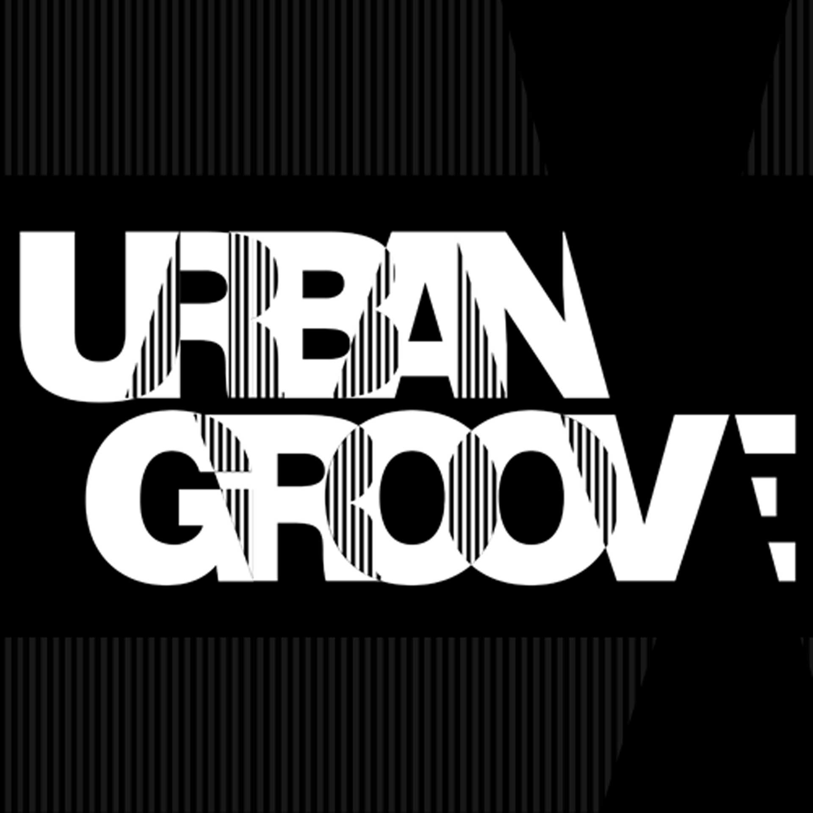

En esta sección podés encontrar entrevistas a referentes de la escena electrónica de Argentina y del mundo.
Comenzamos con Urban groove la mítica agrupación de DJs nos cuenta qué esta preparando en la actualidad, su visión y como fueron sus inicios en los años 90.
A continuacion extrevista exclusiva para Private Techno:
¿En que año nació la Urban Groove y qué los motivo a formar el grupo?
URBAN GROOVE nació en 1994, Diego Cid tuvo la idea de armar un colectivo de DJs con quienes compartía el mismo gusto musical. Se sumaron varios artistas, pero hubo una decantación natural y quedamos los quedamos, algunos se abrieron por falta de afinidad, otros por falta de compromiso y perseverancia. Eran momentos muy duros, nuestra música era ̈muy rara ̈. No solo éramos djs, también estábamos gestando algo que trascendería , convertiríamos al Techno en una movida cultural.
¿Dónde fueron sus primeras presentaciones y cómo respondía el público en ese momento?
Las primeras presentaciones fueron en CLUB CANICHE, en un subsuelo llamado VAMPIRE, un sótano alucinante con un flash y una baliza roja, todo negro, y la cabina sobre un montacargas. Caniche fue un antes y un después en la escena techno, y fue el lugar donde se consolidó Urban Groove. Cuando Caniche cerró no teníamos espacio para tocar, para hacer fiestas, era realmente difícil, éramos como extraterrestres, algo demasiado underground.
Si tuvieran que elegir una anécdota con la Urban Groove ¿Cuál seria?
Anécdota muy graciosa. Situación: en 1998, Urban Groove con un flamante álbum titulado "2 Para El 2000" (editado por la discográfica multinacional Universal Music, en Vinilo Doble, CD, Cassette), es convocada para tocar como grupo soporte de THE PRODIGY, haciendo una performance live de su disco, un super despliegue analógico donde cada uno tocaba una máquina, con músicos invitados EL SIGNO (LEO y GASTON SATRAGNO), CARLOS SHAW y SEBASTIAN FAZON. Terminamos de tocar el último tema y un integrante de Urban Groove, cual guitarrista de banda de metal que arroja su instrumento y lo rompe, no tiene mejor idea que revolear al público como si fuese un frisbee el vinilo "2 Para El 2000", al rato aparece un chico con la cabeza rota, sangrando por el golpe del disco diciendo: -che, flaco! Se te cayo esto! Jajaja!
Pregunta individual: ¿Cuáles fueron sus influencias y que los impulso a comenzar en el mundo de la música electrónica ?
Diego Cid: Rock sinfónico, punk, disco, rock nacional, rock traut, new wave, dark, gotico, industrial ,jazz , clásico, tango , reggae, rap. Siempre me gustó lo hipnótico, repetitivo, las matemáticas y la tecnología. Como bandas preferidas que me volcaron a la música electrónica Pink Floyd, Génesis, Joy Division, Yes, Vangelis, Art of Noise, Kraftwerk, Alan Parsons, Herbie Hancock, Gino Soccio , Virus y alguno que me puedo olvidar en este momento como Mike Oldfield, etc.
Luis Nieva: The Alan Parsons Project, Kraftwerk, Tangerine Dream, Giorgio Moroder, Herbie Hancock, Jean-Michel Jarre, Telex, Devo, Vaughan Mason & Crew, Hamilton Bohannon.
Eduardo Criado: New Wave, Dark Wave, Gótico, Punk rock, Música clásica, funk, EBM. Bandas preferidas: Joy Division, New Order, Bauhaus, Nitzer Ebb, Front 242, Siouxsie and the banshees, The Mission UK, Depeche Mode, Devo, Gary Numan, Soft Cell, Duran Duran, Kraftwerk. Particularmente por el año 1989 hubo un track que se lo escuche a Diego Cid que me llamo poderosamente la atención, era Call it Techno de Frankie Bones, me atrajo el sonido, los bajos, diferente a todo, la música diseñada bajo un concepto de frecuencias.
Miguel Silver: Black Sabbath, Wagner, Funckadelic, Marvin Gate, Front 242, nitzer ebb, Techno Detroit Chicago house.
¿De qué manera preparan sus presentaciones en vivo? ¿Cómo es la dinámica en sus performances?
Nuestras presentaciones pueden darse en varios formatos, tocar uno tras otro, B2B, con intervenciones, LIVE PA, o la performance ̈7 Bandejas y 1 mixer", un show único en el mundo, en el que cada integrante manipula sus bandejas, bajo un rol musical específico ( bases, Loops, fragmentos de tracks, etc.) todo esto conectado a un mixer multi-pista operado por Diego Cid, que habilita y manipula a su criterio el jammin cual director de orquesta.
¿Cuál consideran que fue el hito en la carrera de Urban Groove hasta ahora?
Son varios los hitos de Urban Groove, principalmente ser los pioneros de la escena techno de Sudamérica. Realizar las primeras raves de argentina ( Ultimate Rave, Rave Sudamericana) Tocar con The Prodigy, Kraftwerk, en sus primeras presentaciones en Argentina. La performance 7 bandejas y 1 mixer en el Teatro Gral. San Martín y en K2, la gira del Club Berlinés Tresor. El K2 afterhours con mas de 1000 personas todos los fines de semana hasta altas horas de la tarde. El K2 tenia tres pistas (Groove lab - V – Subliminal) donde podías escuchar música de vanguardia por parte de Urban Groove y de los artistas invitados, nacionales e internacionales. Una experiencia totalmente alucinante, bajabas esas escaleras y era como entrar en otra dimensión, nada que envidiar a los sótanos underground londinenses, discotecas de Berlín o reductos en EEUU.
¿Cuáles fueron sus experiencias mas significativas en el exterior?
La Rave Sudamericana Tour 98. Producción original de URBAN GROOVE y Bioma, bajo la concepción de unificar la escena electrónica de Sudamérica, invitamos a djs sobresalientes del hemisferio sur del continente a exponer su arte. Este mismo mega evento, luego del éxito de Buenos Aires lo replicamos en Brasil, Uruguay, Chile y Paraguay.
A la hora crear música ¿Cómo es el proceso de producción y qué equipos de hardware utilizan?
Al momento de producir no somos para nada prejuiciosos, lo hacemos tanto con Hardware como con Software, algunos de los equipos que utilizamos a lo largo de toda nuestra discografia son: Yamaha Cs1, Korg MS20, Novation Bass Station, Ensoniq Eps16plus, Ensoniq Asr10, Korg Minilogue, Roland tr909, tb303, tr808, 305sx, juno 106, Mini Moog, Korg vocoder,Access Virus TI, Arturia, etc.
¿Qué esta preparando la Urban Groove en la actualidad?
Actualmente estamos reprogramando y planificando las presentaciones para cuando reabran las discotecas. Continuamos con las producciones, se viene otro lanzamiento físico en un importante sello internacional. Además hace ya 3 meses que tenemos nuestro show ́URBAN GROOVE - K2 LIVE BROADCAST ́ que se transmite todos los lunes a las 22:00 hs por el facebook de URBAN GROOVE, donde presentamos djs sets, algunas veces nos acompañan Vjs, otras veces presentamos material exclusivo registrado en nuestros eventos, es algo variado y muy interesante.
¿Cuál es su visión en la actualidad con respecto a la escena Techno en Argentina?
La escena electrónica ha crecido exponencialmente, hay varias crews de techno que hacen muy bien las cosas y por suerte existen un par de lugares que apuestan a la movida.
¿Cómo ven a las nuevas generaciones de artistas Techno locales?
Hay gente tremendamente talentosa, desprejuiciada, con energías renovadas, que realmente se interesa, curiosa, que investiga, que es inquieta por encontrarse con la historia. El techno en argentina tiene más de 35 años de gestación, no nació con el cambio de milenio como muchos piensan, los que entienden eso son los artistas que realmente quieren llegar a otro nivel, los perseverantes son los que van a levantar la bandera del techno y van a darle un nuevo aire a la música electrónica.
¿Qué consejos les darían a los artistas que quieren comenzar en el mundo de la música electrónica?
Investigación para conseguir un sonido techno genuino, ser originales, y tener constancia, no bajar los brazos al primer desamor, la escena puede ser muy cruda, no son solo fiestas, afters y hacerce el roto-rockstar, eso no tiene nada que ver con el techno, es desvirtuar, es ahí cuando van quedando artistas en el camino, hay que ser responsable, trabajar duro y seriamente para que el techno sea considerado como un movimiento cultural verdadero.
INTEGRANTES URBAN GROOVE ( Diego Cid, Luis Nieva, Miguel Silver, Omar Amo, Eduardo Criado ).